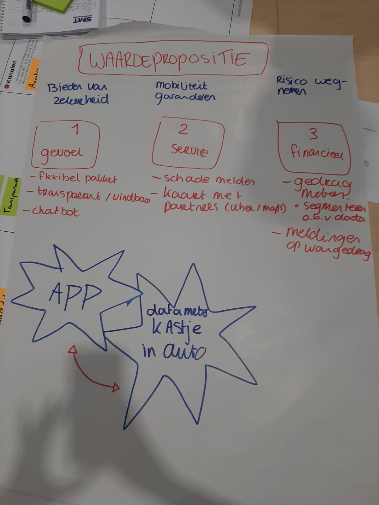

Smart Business
HELLO WORLD VIDEO
Weekopdracht W1: Een voorstel video m.b.t. op de keuze voor de minor Smart Industry.
SMART PRODUCTS & AXA
Weekopdracht W2: BMC, veranderplan en Business Case voor AXA.
Vanuit een workshop waar een adviseur van AXA aanwezig was hebben wij, Wessel, Maurice, Jan en ik een idee bedacht waarbij de verzekeringspremie wordt vastgesteld op basis van rijgedrag door toepassing van Smart Technology. Op basis van de informatie die we in de workshop hebben gekregen hebben we een oud en een nieuwe BMC ontworpen, een veranderplan en een business case geschreven. Bekijk hier de Bestanden AXA.

LEAN, SCRUM & ELK
Weekopdracht W4: Analyse op ELK n.a.v. bedrijfsbezoek + workshop
In het artikel gelezen op moodle worden de volgende 5 parameters gebruikt om Lean praktijken te meten: production flow management, customer focus, process management, workforce management en supplier management. Dit zijn de onderdelen waarop organisaties getest werden, om hun mate van Lean praktijken te meten. Volgens het artikel ligt het succes niet bij 1 van de parameters, maar halen de parameters elkaar naar boven of naar beneden. Op basis van het bedrijfsbezoek bij ELK zijn deze punten ingevuld, om te analyseren in hoeverre ELK aan de parameters voldoet. Daarnaast hebben we deelgenomen aan een workshop Scrum, waar we spelenderwijs onze 'feestfabriek' hebben verbeterd.
Production flow management
Zijn de activiteiten die nodig zijn om producten door de fabrieken heen te verplaatsen en productieflexibiliteit in de supply chain te verkrijgen, implementeren en te beheren.In het onderzoek werd de pijler flow gemeten met onderstaande pijlers:
- Het gebruik van een kanban-pull-systeem voor productie controle;
- De hoeveelheid onderhanden werk inventaris;
- De indeling van de werkvloeren (lage voorraden en snelle doorvoer);
- Het oefenen van set-ups om de benodigde tijd te verminderen;
- Het resultaat van behalen van dagelijkse planningen.
Flow bij Elk
- Resultaatgericht;
- Lage voorraden;
- Houden dagelijkse planning bij, waarbij te zien is hoeveel werk er onderhanden is.
Customer focus
Is een bedrijfsfilosofie die de klant centraal stelt bij alle beslissingen over bedrijfsontwikkeling en management.In het onderzoek werd de pijler customer gemeten met onderstaande pijlers:
- De mate van zoeken naar input van klanten om hun behoeften en verwachtingen te identificeren;
- De mate van verspreiding van behoeften en verwachtingen van de klant bij personeel;
- De frequentie meten van klanttevredenheid;
- De effectiviteit van het proces van oplossen van klachten;
- De mate van hechte relaties met klanten en de manier van communiceren.
Customer bij Elk
- Korte lijnen met klanten, in klantteams;
- Onderhoudsspecialisten te volgen via PC en tablet;
- De maker denkt mee bij ontwerp en uitvoering;
- Langdurige samenwerkingen met klanten.
Process management
Draait om het optimaliseren van processen. Waar in gestreefd wordt naar effectiviteit en efficiency in combinatie met innovatie en flexibiliteit.In het onderzoek werd de pijler process gemeten met onderstaande pijlers:
- Of er fool-proof processen in de fabriek worden ontworpen;
- Of er duidelijke, gestandaardiseerde en gedocumenteerde procesinstructies zijn en de mate waar in die worden begrepen door het personeel;
- De mate van gebruik van statistische technieken om processen te verbeteren en het verminderen van variatie;
- Of het personeel het concept van de ‘interne klant’ begrijpt;
- De mate waar in continue verbetering van productkwaliteit in alle werkprocessen wordt benadrukt.
Process bij Elk
- Realtime projectvolgsysteem;
- Instructies geplakt op nodige plekken;
- Nadruk binnen cultuur op continue verbetering, binnen standups.
Workforce management
Is het inzetten van de juiste medewerkers, met de juiste vaardigheden op de juiste tijd. Of te wel, het afstemmen van het personeel op het werkaanbod.In het onderzoek werd de pijler workforce gemeten met onderstaande pijlers:
- Of het personeel training krijgt om meerdere taken uit te voeren;
- Of het personeel in de fabriek is cross-opgeleid zo dat ze wanneer nodig kunnen invallen;
- De mate van inspanning om meningen en ideeën van teamleden op te halen in probleemoplossende sessies;
- De mate van opgeloste problemen door kleine groep sessies;
- De mate van ontwikkeling in het proces door de probleemoplossende teams;
- Of het personeel de product kwaliteit controleert, van zijn eigen werk.
Workforce bij Elk
- Werken in verschillende klantteams.
- Klantteam heeft contact met klant en de specialisten;
- Personeel wordt cross-opgeleid.
Supplier management
Zijn de activiteiten die gedaan worden om tot een keuze van leverancier te komen, en deze relaties te managen. Om zo een optimale bijdrage te kunnen leveren aan de organisatiedoelstellingen.In het onderzoek werd de pijler supplier gemeten met onderstaande pijlers:
- Het hebben van certificatie en kwalificatie van productkwaliteit bij leveranciers;
- Het hebben van lange termijn afspraken met leveranciers;
- Het hebben van korte termijn bezorging van leveranciers;
- Het hebben van tijdige levering vanuit leveranciers;
- Het hebben van verbintenis met leveranciers door pull-systeem.
Supplier bij Elk
- Hebben korte lijnen op lange termijn met leveranciers. Ze werken vrijwel JIT samen met leveranciers.


SMART ATAG
Week 5: Sfeerimpressie bedrijfsbezoek ATAG.
Wij, de minor klas, zijn op bezoek geweest bij keukenapparatuurproducent ATAG. Zij waren zo vrij ons een rondleiding te geven en meer te vertellen over hun producten en hun bedrijfsvoering, met uiteraard de focus op Smart werken. Hierbij een aantal foto's als sfeerimpressie.


SMART BIJ KROPMAN
Week 6: Korte analyse wat kansen voor Kropman zijn m.b.t. Smart Industry.
Kropman is een installatietechniek bedrijf gevestigd in Nijmegen. Zij maken gebouwen “groener, gezonder en efficiënter” (Kropman, z.d.). Wat zij doen is ontwerpen van installaties en advies geven over gebouwbeheer, de realisatie van gebouw gebonden installaties en het beheren en exploiteren van een efficiënt energiebeheer (Kropman, z.d.).
Smart
In de aankomende maanden ga ik met twee medestudenten een project uitvoeren bij Kropman. Het project gaat over het digitaliseren van de controle checklisten, waarbij goed oog moet worden gehouden op de wensen van de gebruikers . Voordat we hiermee aan de slag gaan heb ik gekeken naar hoever Kropman is op het gebied van Smart. Zie hieronder:InsiteView
Kropman biedt het Smart product Insiteview aan, het is een gebouwbeheersysteem die inzicht geeft in de aanwezige technische installaties en hun status en prestaties. Zo kun je snel beslissingen nemen over de instellingen, de bediening, het onderhoud en het afhandelen van eventuele storingen (Kropman, z.d.).
BIM: Building Information Model
BIM is een 3D informatie model waarin alle data die nodig is voor het ontwerpen, bouwen en beheren van bouwwerken wordt vastgelegd en aan elkaar gekoppeld. Informatie zoals berekeningen, bouwtekeningen, verslagen en rapporten. Alle betrokkenen hebben hier inzicht op (Kropman, z.d.). Dit doet mij denken aan mijn vorige post over Blockchains.
ClimateBuddy
Een volgend product dat Kropman aanbied is de ClimateBuddy. Het is een mobiele tool waar je op elk gewenst moment en plek metingen kunt uitvoeren. Metingen op o.a. binnenklimaat, geluid en de aanwezigheid van CO2.
Kansen?
Op basis van wat er over Kropman te vinden is, is Kropman Smart bezig. Hoe de processen binnen Kropman verlopen is nog vrij onduidelijk en hierop kan ik dus nog niet oordelen. Als er kansen voor Kropman zijn, zouden die mogelijk hier liggen:- Het meten met bouwlasers;
- Een Agile werkwijze;
- Robotica voor installaties en prefabricage;
- Machinelearning voor automatische foutherkenning.
Kropman. (z.d.). Kropman. Geraadpleegd op 6 oktober 2019, van https://kropman.nl
KOOKWORKSHOP x SAMENWERKEN
Week 7: Kookworkshop met de focus op samenwerken en uit je comfortzone stappen.
Met de minor groep hebben we een kookworkshop gevolgd. Hierbij hadden we ingrediënten, apparatuur, recepten en alles wat je maar nodig kan hebben in de keuken tot onze beschikking. De ingrediënten waren echter vrij random gekozen. Zo hadden wij groenten die we nog niet eerder hadden gezien, laat staan gegeten. Onze ingrediënten stuurde ons in de richting van het maken van sushi. Dit hebben we omgetoverd naar het maken van een pokebowl voor de gehele groep.
Het kiezen van een recept was lastig. Er was een verdeling in de groep: de een wilde een recept volgen, de ander wilde maar wat proberen en de rest wilde een combinatie van beiden. We wilde als groep niet saai zijn in wat we maakte, maar tegelijkertijd vond ik dat het wel haalbaar moest blijven. Uiteindelijk heb ik de rol opgenomen als leidinggevende in de groep, en zijn de taken verdeeld. We waren met 5 man, dus best wel een grote groep voor de grootte van ons keukenblok. Ik heb toezicht gehouden en overige ingrediënten gepakt wanneer nodig.
Uiteindelijk hadden we er niet bij nagedacht dat de rijst al afgekoeld moest zijn en is de rijst te ver doorgekookt. Dit had kunnen worden voorkomen als van te voren er meer rust was, tijdens het maken en verdelen van de taken en het doornemen van het recept.
Als groep was er genoeg ruimte voor verbetering, maar onze persoonlijkheden en rollen kwamen tijdens de workshop wel naar voren. Wat ik van de workshop heb geleerd is dat wanneer ik de leiding ga nemen, dat ik daar in niet moet twijfelen en dit van begin af aan moet doen. En mocht ik er voor kiezen om geen leiding te pakken, moet ik me ook niet laten verleiden om dat als nog te doen.
Mocht je zin hebben in een pokebowl, is hier het recept waarop wij geimproviseerd hebben: pokebowl zalm, avocado en komkommer